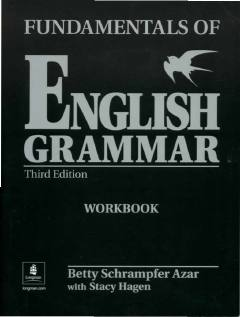

FOIngliz tili grammatikasini mustahkamlash uchun mo'ljallangan amaliy mashqlar to'plami.
Ushbu kitob ingliz tili grammatikasini mustahkamlash uchun mo'ljallangan amaliy mashqlar to'plamidir. Unda zamonlar, fe'llar va gap tuzilmalari bo'yicha turli xil topshiriqlar jamlangan bo'lib, o'quvchilarga nazariy bilimlarni amaliyotda qo'llashga yordam beradi.